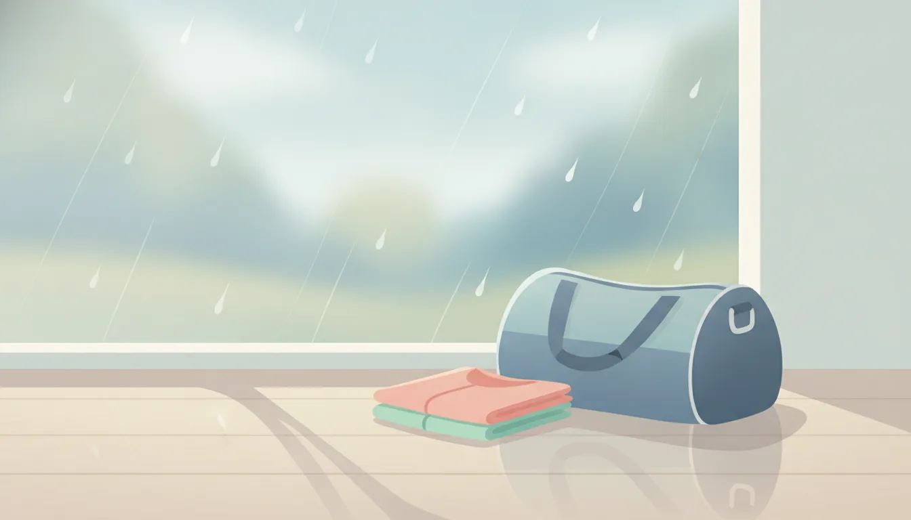

梅雨のジム通いを快適に。速乾ウェア&防水バッグ選び
公開日: 2026-08-21
本ページのリンクには一部アフィリエイトリンクが含まれます(#PR)。
梅雨に入ると、ジムに行くだけでもひと苦労という方は多いのではないでしょうか。雨で服が濡れたり、汗が乾きにくくてジムバッグの中がじめっとしたり。この時期特有の悩みは、ウェアとバッグの選び方を少し工夫するだけでかなり軽減できます。今回は、梅雨時期のジム通いに役立つ速乾ウェアと防水バッグの選び方を、機能面から整理してみました。道具選びのポイントさえ押さえておけば、雨の日の憂うつさは思った以上に軽くなるはずです。
☔ 梅雨時期のジム通いで起こりがちな困りごと
雨の中でジムに向かうとき、まず気になるのが「濡れた状態でトレーニングをすることになる」点です。湿度が高いうえに汗も蒸発しにくいため、ウェアが肌に張り付いたまま運動を続けることになりがちです。さらに、帰り道に着替えを持ち帰る際、汗や雨で濡れたウェアをバッグに入れると、他の荷物まで湿ってしまうこともあります。こうした小さなストレスの積み重ねが、梅雨時期にジム通いが億劫になる原因のひとつと言えそうです。
👕 速乾ウェアを選ぶときにチェックしたいポイント
速乾性をうたうウェアはたくさんありますが、選ぶ際に見ておきたいポイントはいくつかあります。
- 素材表示に「ポリエステル」「吸汗速乾」「ドライ機能」といった記載があるか
- 生地の織り方が細かすぎず、通気性を確保できる構造になっているか
- 汗じみが目立ちにくい色・柄になっているか
- 縫い目が肌に当たりにくく、汗をかいても擦れにくい設計か
綿混紡の生地は肌触りが良い反面、水分を含むと乾きにくい傾向があります。梅雨時期に限っては、化学繊維を中心としたウェアのほうが扱いやすいことが多いです。においが気になる方は、抗菌・防臭加工がされているタイプを候補に入れておくと、湿った状態が続く時期でも安心感があります。
🎒 防水バッグの選び方と注目したい機能
ジムバッグを選ぶときは、生地の防水性だけでなく「どこまで水を防げるか」を確認しておくと失敗が少なくなります。完全防水をうたう製品もあれば、撥水加工程度のものもあるため、用途に合わせて見極めが必要です。
- 底面や側面の縫い目に防水テープ処理が施されているか
- ファスナー部分が止水タイプになっているか
- 濡れたウェアを分けて入れられる、防水ポケットや仕切りがあるか
- 素材が乾きやすく、においがこもりにくいか
特に、濡れたウェアやタオルを別収納できる仕切りがあるバッグは、梅雨時期には重宝します。バッグ本体が防水でも、中身が全部ひとつの空間に入っていると、結局は他の荷物まで湿ってしまうことがあるからです。
🧴 初心者向け:まず揃えておきたい最低限のアイテム
ジム通いを始めたばかりの方は、最初からすべてを揃える必要はありません。梅雨時期に限って言えば、優先度が高いのは次の3つです。
- 速乾素材のトップスを1〜2枚
- 撥水または防水加工のあるジムバッグ
- 濡れたタオル・ウェアを入れる防水ポーチ
この3つがあれば、雨の日でも荷物が水浸しになる心配はかなり減ります。慣れてきたら、速乾パンツやレインシューズカバーなど、必要に応じて買い足していく形で十分だと思います。最初から高機能なものを求めすぎず、まずは手持ちの荷物に合わせて一つずつ試していくくらいの気持ちで選ぶのがちょうど良いかもしれません。
🌦️ 梅雨と夏で変わる速乾ウェアの選び方
梅雨は蒸し暑さと雨の両方に対応する必要がある、少し特殊な時期です。真夏のように汗の量だけを気にすればいいわけではなく、湿度による「乾きにくさ」も考慮しないといけません。夏本番になると気温が上がる分、汗の絶対量は増えますが、外気自体は乾いているため意外と乾きは早くなります。一方梅雨時期は、気温はそこまで高くなくても湿度が高いせいで、ウェアが乾く前に次の汗をかいてしまう、という状況になりやすいです。そのため梅雨用には、夏用よりもさらに速乾性を重視した素材を選ぶという考え方もひとつの目安になります。
🧺 お手入れと保管で気をつけたいこと
速乾ウェアも防水バッグも、洗濯や保管の仕方次第で機能の持ちが変わってきます。濡れたまま放置すると、においや雑菌の原因になりやすいので、帰宅後はできるだけ早めに洗濯機に入れるか、陰干しをしておくのがおすすめです。防水バッグは、内部が湿ったまま閉じてしまうとカビの原因になることもあるため、使用後はファスナーを開けて風を通しておくと長持ちしやすくなります。洗濯表示に防水・撥水加工についての注意書きがある場合は、それに従うことで加工が長持ちしやすくなります。
❓ よくある質問
Q. 速乾ウェアと防水バッグ、どちらから揃えるべきですか?
両方ないと困る、というほどではありません。通勤・通学の途中にジムに寄る方は防水バッグを優先し、ジム内での快適さを重視する方は速乾ウェアから揃えるなど、自分の生活スタイルに合わせて選ぶのがよいと思います。
Q. 完全防水のバッグでないと梅雨時期は厳しいですか?
必ずしも完全防水である必要はありません。撥水加工でも、短時間の移動であれば十分対応できることが多いです。ただし長時間雨に当たる可能性がある方は、底面だけでも防水性が高いものを選ぶと安心感が増します。
Q. 速乾ウェアはにおいが気になりやすいと聞きましたが本当ですか?
化学繊維は乾きやすい反面、においが残りやすいと感じる方もいます。気になる場合は、抗菌・防臭加工がされている製品を選ぶと、多少軽減できることがあります。
この記事でおすすめしたいアイテム
 PR
PR
 PR
PR
 PR
PR
本ページのリンクには一部アフィリエイトリンクが含まれます(#PR)。